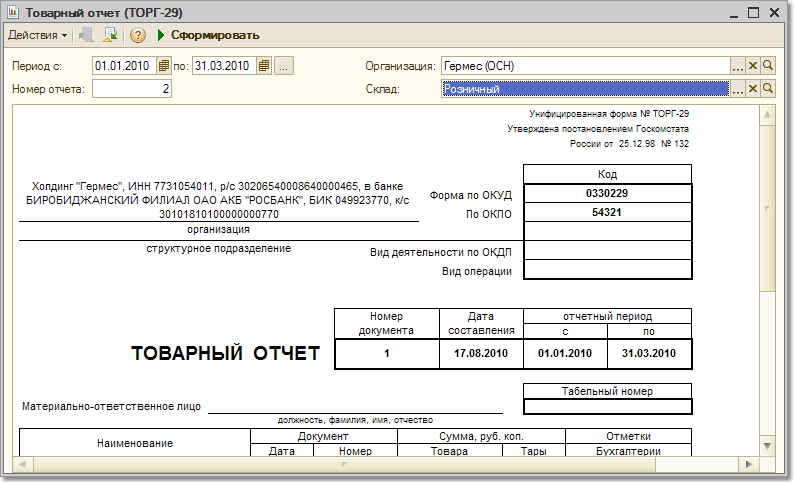

Отчет «Товарный отчет (ТОРГ-29)»
Отчет предназначен для формирования товарного отчета по унифицированной форме ТОРГ-29, утвержденной постановлением Госкомстата от 25.12.1998 №132.
Отчет позволяет получить следующую информацию:
-
остатки товара на начало периода;
-
суммы поступления товара в разрезе приходных документов;
-
суммы расхода товара в разрезе расходных документов;
-
остатки товара на конец периода.
В форме диалога отчета задаются следующие настройки:
-
Даты начала и конца периода, за который требуется сформировать отчет.
-
Номер отчета. Номера товарных отчетов по складу должны нумероваться последовательно.
-
Организация, для которой формируется отчет.
-
Склад, по которому формируется отчет. Реквизит склад является обязательным для выбора. Можно выбирать розничные склады и неавтоматизированные торговые точки.
